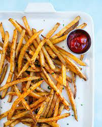

French Fries

Description
It's been a long week so treat yourself to some crispy, perfectly seasoned french fries. It'll be better than any found at fast food chains.
Ingredients
- 2.5 pounds russet potatoes, peeled
- 1 cup vegetable oil for frying
- 1 cup all-purpose flour
- 1 teaspoon garlic salt
- 1 teaspoon onion salt
- 1 teaspoon paprika
- 1 teaspoon salt
- 1.5 cup water, or as needed
Steps
- Slice potatoes into French fries and place them into a large bowl of cold water to prevent them from turning brown.
- Heat oil in a heavy saucepan or large skillet to 350 degrees F (175 degrees C).
- While the oil is heating, sift flour, garlic salt, onion salt, paprika, and salt into a large bowl. Gradually stir in enough water to make a slightly thick batter that can be drizzled from a spoon.
- Drain fries and pat dry; dip into the batter one at a time and place in hot oil to prevent them from clumping together. Fry until golden brown and crispy on all sides, about 7 to 10 minutes; drain on a paper towel-lined plate.
Return to main page